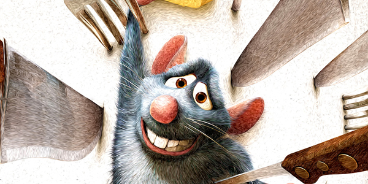

POWERFULL ADMIN PANEL
WEB PAGES
Watercolor theme comes with a built-in powerful
admin panel designed to configure all of the
options of the site.

APPERANCE
WRITING
Customize the appearance of your theme from
the 4 predefined skins: Spring, summer, autumn
and winter.

6 PAGE LAYOUT
PAINTING
All you need for a complete website. Home page, contact page,
image gallery page, video gallery
page, regular page and blog and single page.
More